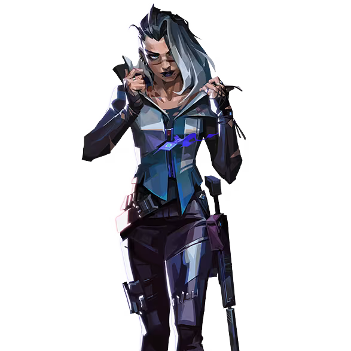

フェイド

国籍: トルコ
ロール: イニシエーター
フェイドは敵を追跡し、位置を特定する能力に優れたエージェントです。彼女のアビリティは、敵の隠れ場所を暴き、チームに情報を提供するのに役立ちます。
公式トレーラー
スキル
| スキル名 | 値段 | 所持上限 | 説明 |
|---|---|---|---|
| ホウント (Q) | 250 | 2個 | スキル使用で霊的なオーブを投げ、敵をマークし位置を特定する。オーブは一定時間後に消滅する。 |
| シーズ (E) | 200 | 1個 | 地面に着弾すると敵を拘束するオーブを投げる。範囲内の敵は動けなくなり、ダメージを受ける。 |
| プラウラー (C) | 300 | 2個 | スキル使用で追跡する霊的な獣を放つ。敵を見つけるとその位置をマークし、短時間視界を奪う。 |
| ナイトフォール(X) - アルティメット | - | 1個 | スキル使用で広範囲に霊的な波動を放ち、範囲内の敵の位置を特定し、視界を奪う。 |
立ち回りとおすすめマップ
攻めの立ち回り
フェイドはホウントやプラウラーを使って敵の位置を特定し、サイトへの突入をサポートします。シーズで敵を拘束し、チームが安全に進行できるようにします。
守りの立ち回り
守りにおいても、ホウントやプラウラーで敵の位置を把握し、シーズで敵の進行を遅らせます。ナイトフォールを使って敵全体の動きを封じることも強力です。
アルティメットの使い方
ナイトフォールは広範囲の敵を無力化し、その位置を特定するため、ラウンドの流れを大きく変えることができます。攻撃・防御のどちらでも有効に使えます。